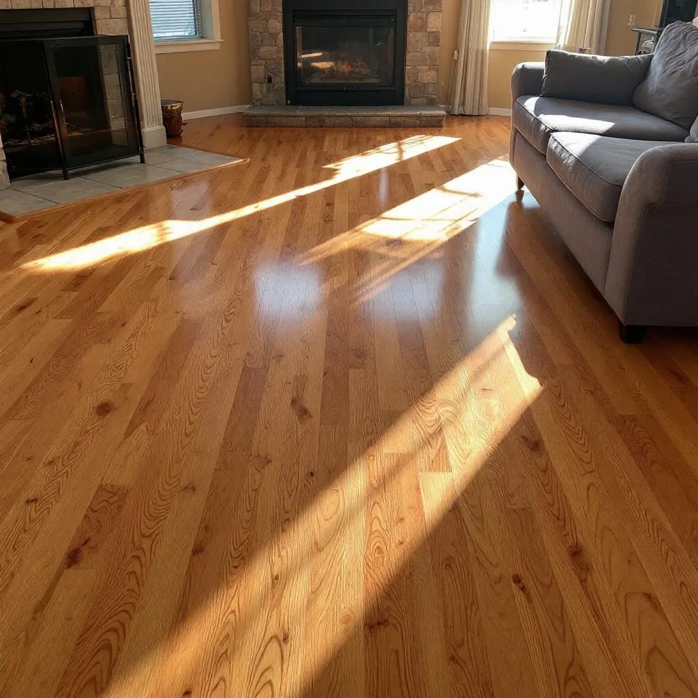
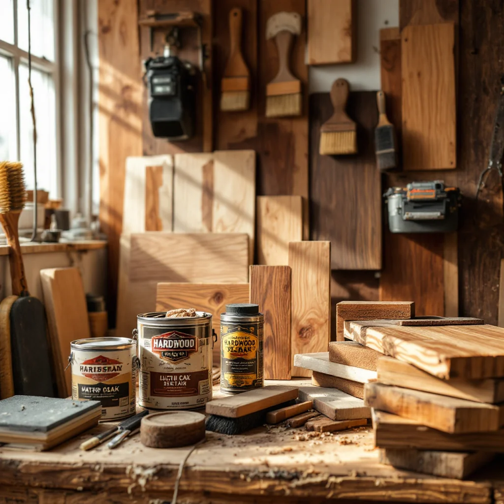
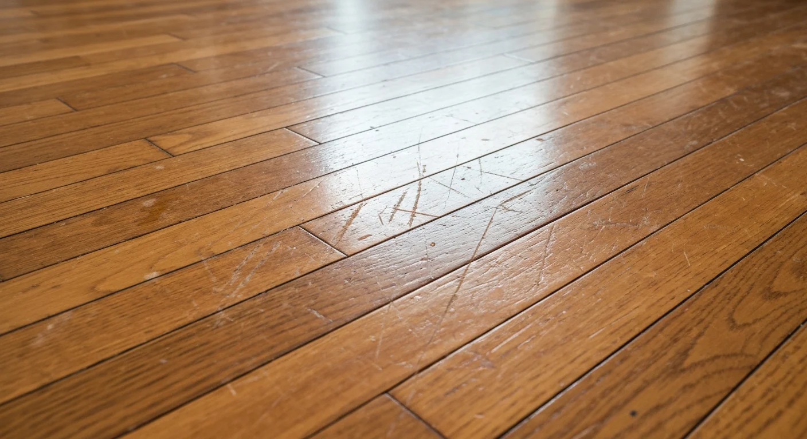
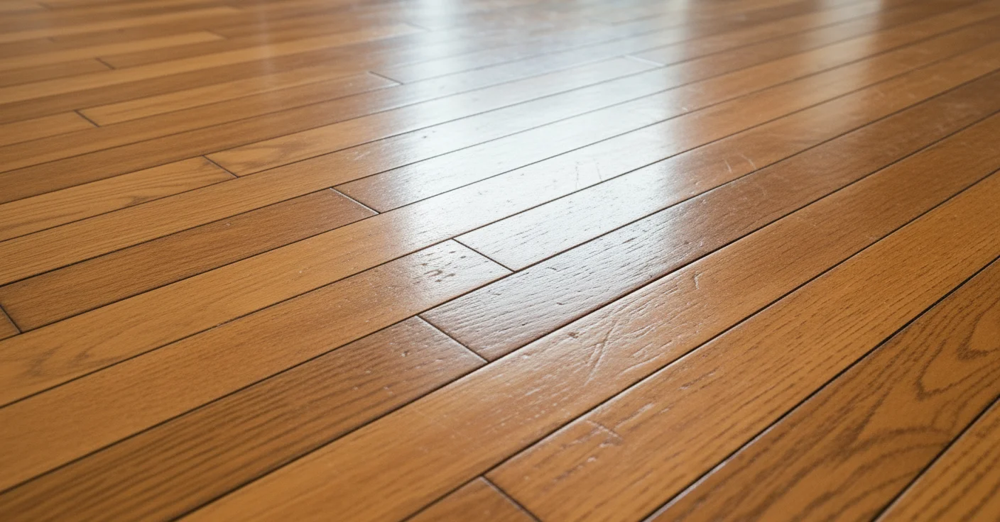
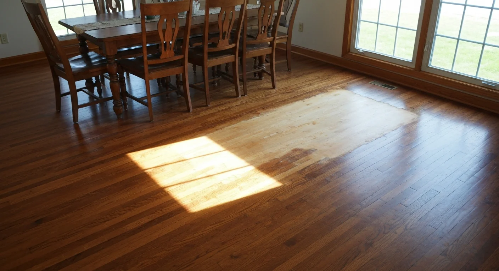
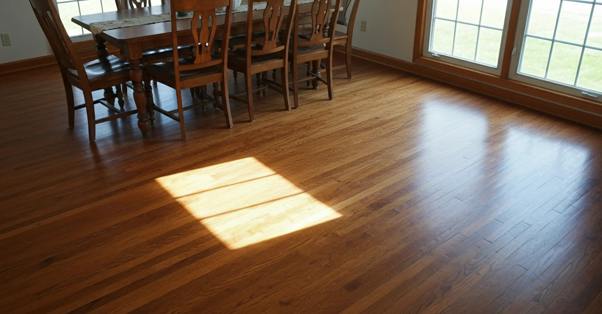
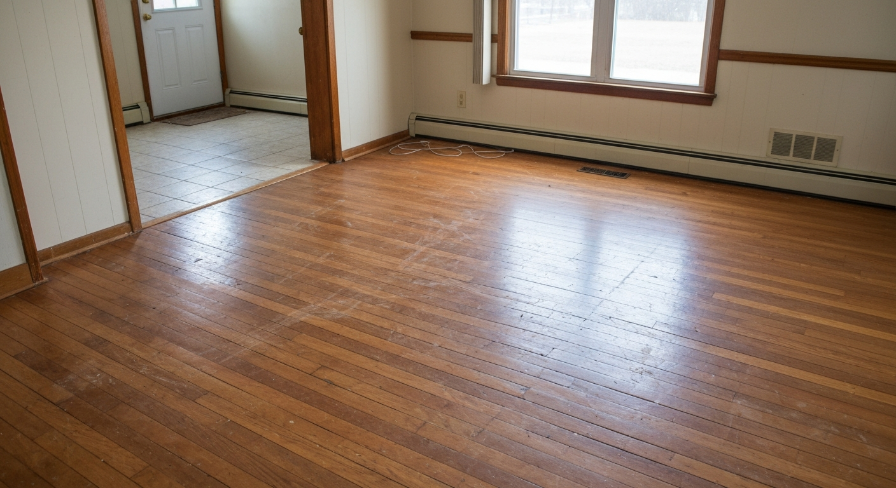
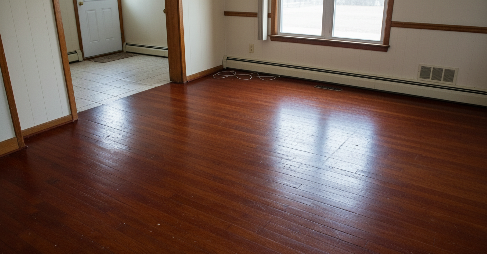
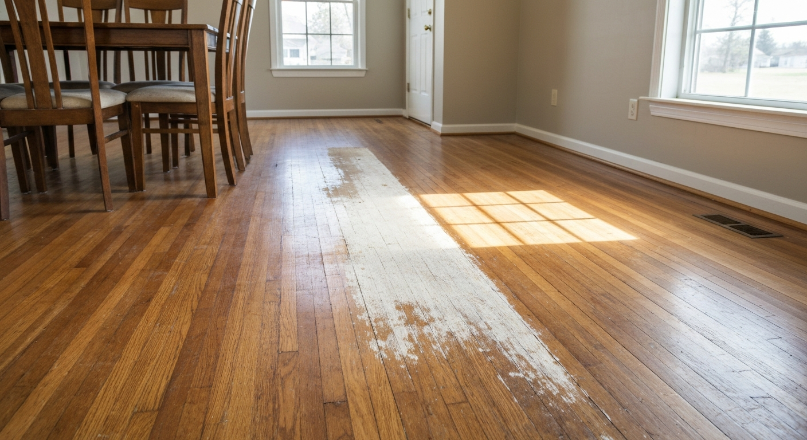
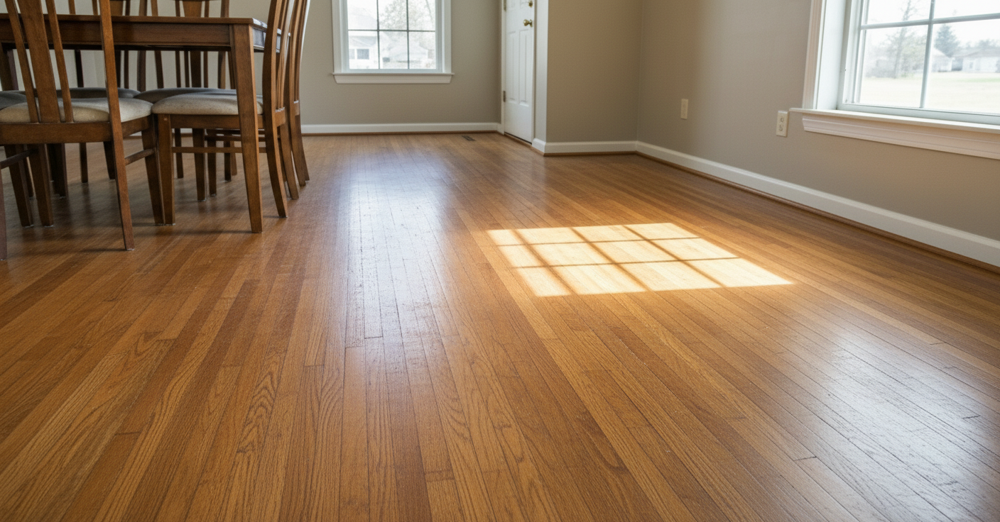

Hardwood Floor Refinishing in Elkhorn — Dustless. Custom Stains. 3-Year Warranty. Free Estimates.
We restore scratched, faded, and outdated hardwood floors across the Elkhorn and Walworth County area with NWFA-certified technique, dustless sanding technology, and commercial-grade finishes built for Wisconsin's seasonal climate demands.

Your Hardwood Floors Are Telling You Something
Scratches that catch the light from every angle. The orangey builder-grade finish that looked fine when you moved in but now makes the whole room feel dated. Boards that have faded unevenly near windows. A bathroom or kitchen spot where water got in and the finish is cloudy or peeling.
None of it means the floors are ruined. In almost every case, it means they need to be refinished — which means sanded back to bare wood, stained (or not), and finished properly with a product that will hold up to actual daily life in Elkhorn.
The biggest mistake Elkhorn homeowners make with hardwood: waiting. Surface scratches become deep scratches. Cloudy finish becomes peeling finish. A $3/sq ft refinish becomes a partial board replacement job because the wood was left unprotected too long.
And in Wisconsin's cold winters, with heated interiors driving humidity down to 20–25%, hardwood that isn't properly finished is more vulnerable to seasonal contraction damage than in any moderate climate.
The Fears That Keep Elkhorn Homeowners from Acting — Addressed
- "I don't want dust everywhere for a week" This was legitimate 15 years ago. Dustless sanding captures 99% of dust at the source. Homeowners with pets and children routinely stay in the house during the process with no issues. This is a solved problem — if the contractor is using the right equipment.
- "I don't know what color to choose" This is the #1 anxiety in our business — and it's why we do on-floor test patches with the actual stain you're considering. You see it on your wood, in your lighting, before we proceed. You can't make a wrong decision when you've literally seen it on your floor.
- "It's expensive and I might not do it right" A refinish ranges from $3–$5/sq ft done professionally. Redoing it after a DIY attempt — dealing with sanding marks, blotchy stain application, or a finish that bubbled — runs 30–50% more. The savings on a $2,000 job can become $3,200 in corrections.
- "It'll look worse after" This is the fear that comes from hearing a horror story. Sanding marks, mismatched stain, finish that peeled after one winter — these come from using the wrong contractor, not from refinishing itself. Ask about certifications (NWFA), the finish brand, and the warranty. Those three things separate professionals from side jobs.
Hardwood Floor Services for Elkhorn Homeowners
From whole-house refinishing to precision repairs, we handle every hardwood floor project with NWFA-certified technique and commercial-grade materials built for Nebraska's demanding climate.
Whole-House Sand & Refinish
Complete sanding to bare wood with professional staining and multi-coat polyurethane finishing for every room in your Elkhorn home.
$3–$8 per sq ftLearn More →
Dustless Floor Sanding
HEPA-filtered sanding captures 99% of dust at the source. No plastic sheeting, no cleanup nightmare — critical at Elkhorn' altitude where particles linger longer.
$3.50–$5 per sq ftLearn More →
Custom Stain & Color Change
Transform your floor's look with 40+ stain colors. From classic golden oak to trending espresso or modern gray — we apply test patches on your actual floor before committing.
$4–$9 per sq ftLearn More →
Commercial Floor Refinishing
Gym floors, restaurants, retail spaces, and office buildings refinished on your schedule. After-hours and weekend work available to minimize business disruption.
$2.50–$6 per sq ftLearn More →
Hardwood Floor Repair
Board replacement, water damage restoration, gap filling, and structural repairs. We carry salvage wood inventory to match original boards seamlessly in older Elkhorn homes.
$500–$2,000 per projectLearn More →
Hardwood Floor Installation
New solid and engineered hardwood installed with expert subfloor preparation. Nail-down, glue-down, and floating methods available for any Elkhorn home.
$6–$15 per sq ftLearn More →
What the Refinishing Process Actually Looks Like
From the first estimate to the final coat — here's what to expect when you book a refinishing job in Elkhorn.
Free In-Home Estimate
We assess the floor condition, measure the space, note any repairs needed, and give you written pricing. No hourly estimates — fixed price per square foot so you know the number before work starts.
Repairs & Floor Prep
Board replacement, gap filling, squeaky subfloor fastening — any prep work happens before sanding. A refinish is only as good as what's underneath.
Dustless Sanding
HEPA-filtered equipment removes the existing finish down to bare wood. Multiple grits ensure a smooth, level surface. If you're doing a stain change, test patches go on now so you can confirm the color before we proceed.
Staining (if applicable)
Stain is applied and sealed before finish coats. Drying time varies — oil-based stains need 24 hours in Wisconsin's winter conditions. We account for this in the project schedule.
Finish Coats & Cure
2–3 coats of commercial-grade polyurethane, lightly buffed between coats. Light foot traffic after 24 hours; furniture back after 72 hours; full cure (including area rugs) in 30 days. We back the finish with a written 3-year warranty.
Built for Nebraska's Climate. Backed by Craftsmanship.
Elkhorn sits at 6,035 feet with bone-dry winters, intense UV, and temperature swings that punish poorly finished hardwood. Our process accounts for every one of these factors.
Dustless Sanding Technology
Our HEPA-filtered system captures 99% of sanding dust at the source. No plastic sheeting, no post-project deep cleaning. At this altitude, airborne dust lingers 40% longer than at sea level — our equipment was built for that challenge.
Bona Mega ONE Finish System
We exclusively use Bona Mega ONE — a commercial-grade waterborne polyurethane that's 3x more durable than standard finishes. It handles Nebraska's UV exposure and 90-degree temperature swings without yellowing, cracking, or peeling.
40+ Custom Stain Colors
From classic golden oak to trending charcoal gray, we bring stain samples to your home and apply test patches on your actual floor in your lighting. Elkhorn homeowners love the warm walnut and weathered gray tones that complement our mountain aesthetic.
3-Year Finish Warranty
Every refinishing project includes a written 3-year warranty on finish adhesion, peeling, and premature wear. We use NWFA-approved techniques and commercial-grade Bona products — a warranty is only as good as the materials and craftsmanship behind it.

Locally Owned. Elkhorn Built.
Elkhorn Hardwood started in 2014 when our founder saw too many Omaha metro area homeowners getting franchise-level work at premium prices. We believed Elkhorn deserved a locally owned crew that actually understood the challenges hardwood faces at 6,000 feet — the bone-dry winters that crack finishes, the altitude UV that fades stains in half the time, and the seasonal temperature swings that test every board joint.
We've since refinished over 500 homes across the region, from 1920s oak in Bennington estates to builder-grade floors in Millard subdivisions. Every project gets the same treatment: NWFA-certified technique, Bona Mega ONE commercial-grade finish, and a 3-year warranty we stand behind completely.
Whether you're a military family prepping for a PCS move at Fort Carson, an Airbnb host refreshing a Gretna rental, or a Bennington homeowner restoring original 1940s hardwood — we approach every floor like it's our own.
Recent Hardwood Floor Projects in Elkhorn
Browse recent refinishing projects from homes across the Omaha metro area. Every floor is sanded, stained, and finished by our NWFA-certified crew.
{kind=link}
{kind=link}
{kind=link}
{kind=link}
{kind=link}
{kind=link}
See the Transformation
Real results from Elkhorn hardwood floor refinishing projects. Drag your eye from before to after — the difference speaks for itself.
Scratched & Worn Floors


Sun-Damaged Floors


Get a Free Hardwood Floor Refinishing Estimate
We provide detailed, no-obligation quotes with transparent pricing. Most estimates are completed within 48 hours of your call. Serving all of Elkhorn and the surrounding Omaha metro communities.
What Elkhorn Area Homeowners Are Saying
"Red oak floors throughout the main level — heavy scratches from furniture and 15 years of dogs. The test patch they did before staining showed me exactly what the gray-brown tone would look like. The finished result is exactly what I imagined and I was nervous about picking a color. Takes all the guesswork out."
"We've been through three Wisconsin winters since the refinish — no gaps, no peeling, no cracking. I specifically asked about their finish choice because I'd seen other floors come apart in the cold. They use commercial Bona product and explained why it handles temperature swings better. It shows."
"Previous contractor left sanding swirl marks on the dining room floor — visible every time the afternoon light hit it. They came in, assessed the damage, fixed the marks, and refinished the whole room. No swirls, no blotchy stain. The 3-year warranty gave us confidence going in and the work backed it up."
What Does Hardwood Refinishing Cost in Elkhorn?
No mystery here. Fixed-price-per-square-foot so you know the number before we start:
$1.00–$2.00/sq ft. Light scuff and new topcoat. Works if the existing finish is in good shape with no deep scratches. Fast — typically done in 1 day.
$3.00–$4.50/sq ft. Down to bare wood, 3 finish coats. A standard 800 sq ft main floor runs $2,400–$3,600.
$4.00–$5.50/sq ft. Includes stain application and test patches on your floor before we commit to a color. Most popular option for pre-sale prep and whole-home renovation projects.
$100–$500+ per repair area, depending on scope. Water damage, warped boards, squeaky sections. We carry salvage inventory to match period wood in older homes.
All quotes are flat price. No hourly billing, no after-the-fact surprise charges. The written estimate is the final price.
Why Wisconsin Winters Make Finish Selection Critical
Wisconsin's cold winters and dry heated interiors cause hardwood to contract seasonally — proper finish selection and moisture-stable species selection matter more here than in moderate climates. What this means for Elkhorn homeowners:
When indoor humidity drops to 20–25% in winter (common in heated Wisconsin homes without humidifiers), solid hardwood contracts. Small gaps between boards are normal and close back up in spring — but wide gaps indicate the humidity swings are too extreme and the floor was acclimated improperly or finished with a rigid product that can't flex.
Cheaper oil-based finishes can delaminate when wood contracts significantly in cold months. Commercial-grade waterborne polyurethane has better flexibility and handles seasonal movement without cracking at the board joints.
Any new hardwood installed without proper acclimatization to your home's specific humidity will gap or buckle within one season. We require 5–7 days of acclimatization minimum for solid hardwood installations in Elkhorn homes — more in older homes with variable humidity.
We serve Elkhorn, Delavan, Lake Geneva, Burlington, and surrounding Walworth County communities. If you're in downtown Elkhorn or the Lake Geneva area where older homes are common, we're experienced with the specific wood species and construction methods from each era.
Hardwood Floor Refinishing Across the Omaha metro Region
We serve Elkhorn and surrounding communities within a 30-mile radius. From the luxury homes of Bennington to the ranch houses near Fort Carson — we refinish floors across El Paso County and beyond.
Bennington
Luxury estates & historic homes
Millard
Family homes & subdivisions
Old Nebraska City
Historic district homes
Chalco
Mountain-adjacent properties
Gretna
Victorian & arts district homes
Falcon
New construction upgrades
Black Forest
Custom homes on acreage
Waterloo
Tri-Lakes area homes
Security-Widefield
Fort Carson military families
Fountain
Ranch & split-level homes
Palmer Lake
Mountain cabins & cottages
Woodland Park
Ute Pass communities
Hardwood Floor Refinishing FAQ
Answers to the most common questions we hear from Elkhorn homeowners about hardwood floor refinishing, costs, and our process.
Hardwood floor refinishing in Elkhorn typically costs $3–$8 per square foot, depending on the condition of your floors and the finish you choose. A standard 1,000 sq ft refinishing job runs $3,000–$5,000 including sanding, staining, and two coats of polyurethane. Dustless sanding adds $0.50–$1.00 per sq ft. We provide free on-site estimates with exact pricing — no hidden fees. Visit our pricing page for detailed cost breakdowns.
A typical whole-house refinishing project takes 3–5 days for a 1,000–1,500 sq ft home. Day one is sanding, day two is staining, and days three through five are finish coats with drying time. You can walk on floors in socks after 24 hours and move furniture back after 72 hours. Elkhorn' dry climate actually helps — finishes cure faster here than in humid regions.
Dustless sanding uses industrial HEPA-filtered vacuum systems attached directly to the sanding equipment, capturing 99% of wood dust at the source. At Elkhorn' altitude, fine particles stay airborne even longer. Our dustless system means no plastic sheeting, no post-project deep cleaning, and safe air quality for families with allergies or asthma. Learn more about our dustless process.
Yes. Cold Wisconsin winters with forced-air heating drop indoor humidity to 20–25%, causing solid hardwood to contract significantly. This seasonal movement is normal — but without proper finish selection, proper species choice, and acclimatization, it leads to gaps, cracking finishes, and delamination. We specify products designed for this movement range and require adequate acclimation time on all installation jobs.
If the boards themselves are structurally sound — not rotted, not warped beyond repair, not cupped permanently — the floor can almost certainly be refinished. Refinishing removes scratches, stains, and old finish down to clean bare wood. Only boards with structural damage need replacement. The honest answer is: most floors we see that homeowners think need replacement actually just need a good refinish.
Our 100% Satisfaction Guarantee
We stand behind every project with a written 3-year finish warranty. If your finish peels, bubbles, or wears prematurely under normal use, we'll fix it — free. Our NWFA-certified process and Bona commercial-grade materials mean warranty claims are virtually unheard of. Your satisfaction isn't just a promise — it's guaranteed.
Spring Is When Refinishing Makes the Most Sense in Elkhorn
After a Wisconsin winter with low humidity, spring is ideal timing for refinishing — stable temperature and rising humidity mean better stain absorption, better finish adhesion, and longer cure times without the temperature extremes of summer. Our spring schedule fills up 3–4 weeks out. If you're planning a project before the end of spring or ahead of a home sale, this is the call to make now.
Our Work
Real results from real jobs in the area

Before
After
Before
After